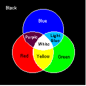

After drawing a model defined by the mathematical conversions explained thus far, you need to insert a light source (and shading), material properties (such as shininess), and color to make the model appear real. This Chapter describes how to implement color, lighting, properties, and shading in your game program.
Colors expressed on a computer are basically expressed using the three primary colors of light (red, green, and blue) that can be displayed by a luminous object like a TV screen. Other colors are created by mixing red, green, and blue together.

Although this illustration shows only eight colors, you can create many more colors by using different mixes and by changing the brightness of the colors. For example, if you reduce the brightness of the mixed color of red, green, and blue a little, the color becomes light gray. Then if you increase the brightness of the red, the color becomes pink.
Nintendo® Confidential
Copyright © 1999
Nintendo of America Inc. All Rights Reserved
Nintendo and N64 are registered trademarks of Nintendo
Last Updated March, 1999